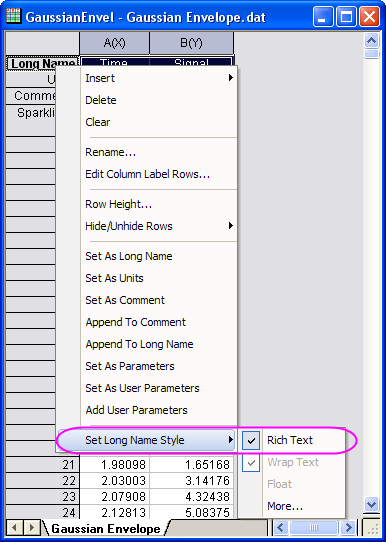
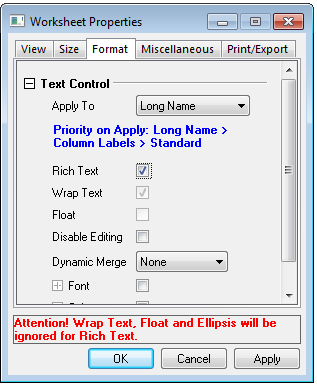

FAQ-477 Wie aktiviere ich RichText für Arbeitsblattkopfzeilen?
RichText-for-WksHeader
Letztes Update: 13.07.2018
Um Sonderzeichen in den Spaltenbeschriftungen anzuzeigen, wie z. B. tiefgestellte Zeichen in den Zellen der Einheiten, müssen Sie den Modus RichText aktivieren. Origin bietet zwei Möglichkeiten, RichText zu aktivieren:
- Klicken Sie mit der rechten Maustaste auf die entsprechende Spaltenbeschriftungszeile und aktivieren Sie RichText im Kontextmenü. Wenn Sie beispielsweise Langname im Modus RichText haben möchten, klicken Sie mit der rechten Maustaste auf die Beschriftungszeile Langname; gehen Sie dann im Kontextmenü auf Stil des Langnamens festlegen und aktivieren Sie RichText.
- 
oder
- Wählen Sie Format: Arbeitsblatt, um den Dialog Arbeitsblatteigenschaften zu öffnen.
- Wechseln Sie zur Registerkarte Format und ändern Sie die Option in der Auswahlliste Anwenden auf zu der gewünschten Kopfzeile, wie z.B. Langname, und aktivieren Sie das Kontrollkästchen RichText. Siehe auch den Screenshot unten:
- 
- Nach der Aktivierung von RichText für Arbeitsblattkopfzeilen können Sie Sonderzeichen mit Hilfe des Dialogs Abbildung Symbole einfügen und hoch-/tiefgestellte Zeichen über die Symbolleiste Format direkt eingeben.
- Sobald RichText aktiviert ist, sind einige erweiterte Einstellungen wie Umbruch für Text, Textfluss über Zellgrenze und Ellipse nicht mehr verfügbar.
- Der gesamte RichText kann verwendet werden, um Diagramme mit Anmerkungen zu versehen, beispielsweise in Legenden und Achsentiteln.
|
Schlüsselwörter: RichText, tiefgestellt, hochgestellt, Angström, Grad, Mathematik, Umlaute, Diärese, akut, Tilde, Akzent, Makron, Zirkumflex, Plancks Konstante, Planck, Pi